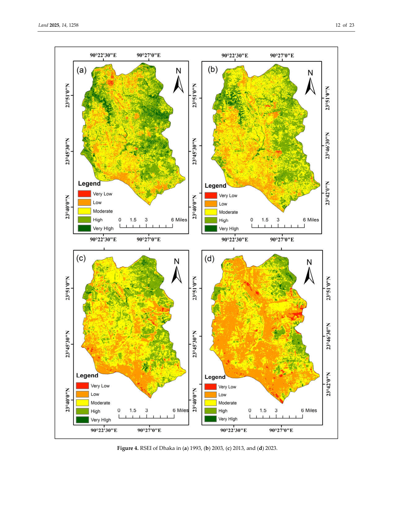
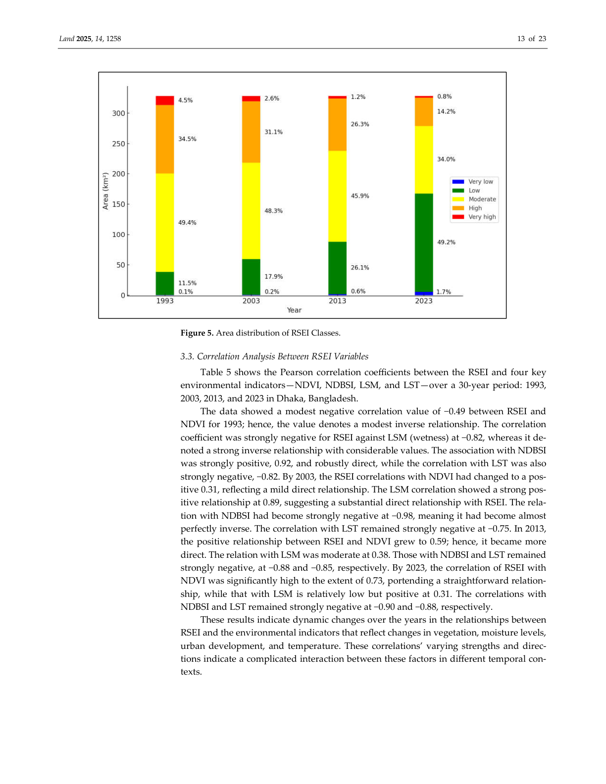
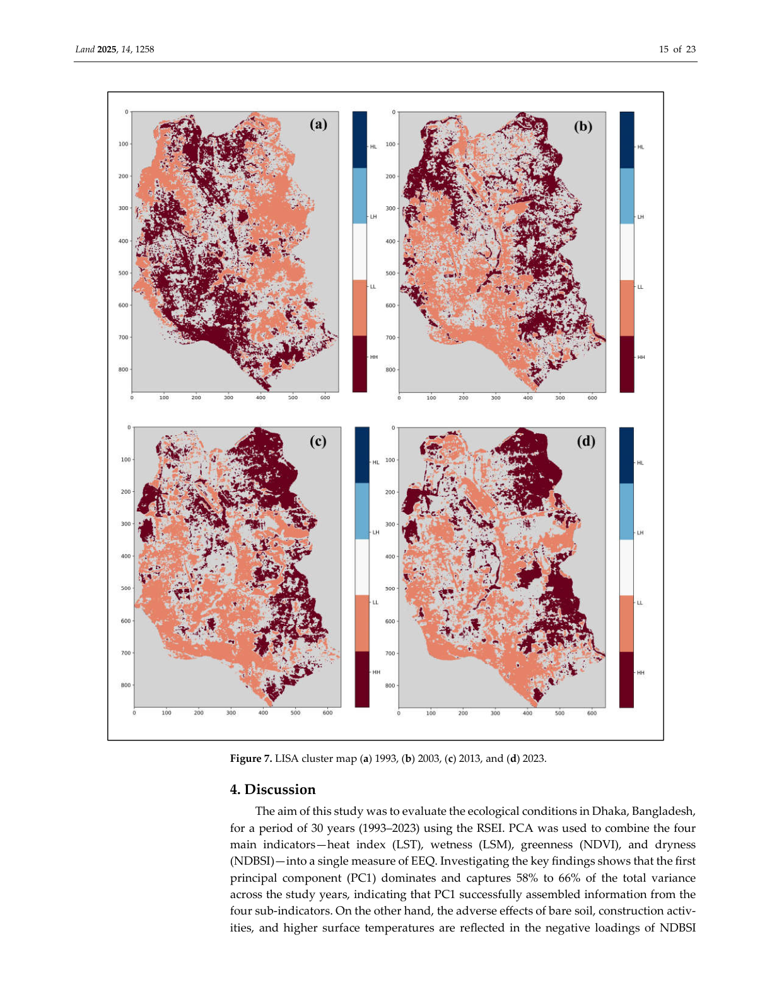
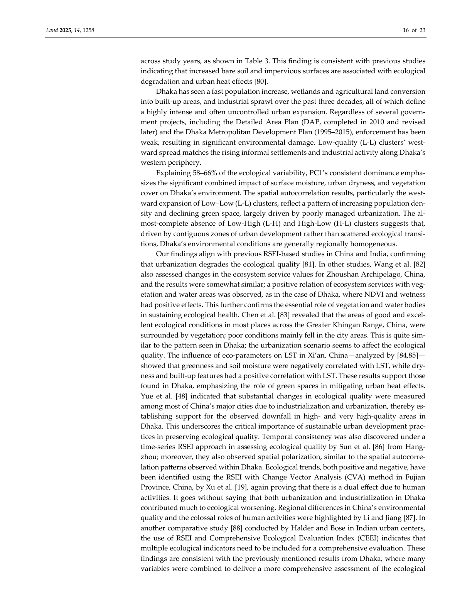

Analyzing ecological environmental quality trends in Dhaka through Remote Sensing Based Ecological Index (RSEI). Spatiotemporal assessment using Landsat imagery across three decades of rapid urbanization.
Explore the StudyA multi-stage workflow integrating satellite remote sensing, PCA, and spatial autocorrelation for Dhaka from 1993 to 2023.
Landsat 5 TM (1993, 2003) and Landsat 8 OLI/TIRS (2013, 2023) obtained via Google Earth Engine. Cloud cover <1%. January acquisitions selected for dry season consistency and atmospheric clarity.
Four ecological indicators computed: NDVI (greenness), LST (heat index), NDBSI (dryness), and LSM (wetness). All indicators normalized to a 0-1 scale for inter-comparability across time periods.
Principal Component Analysis applied to integrate the four indicators into a single composite index. PC1 captured 58-66% of total variance across study years, selected as the RSEI basis.
RSEI values categorized into five equal-interval classes: Very Low (0-0.2), Low (0.2-0.4), Moderate (0.4-0.6), High (0.6-0.8), and Very High (0.8-1.0) for spatial quality mapping.
Global Moran's I (0.88-0.93) assessed spatial correlation strength. LISA cluster maps identified Hot-Hot, Cold-Cold, Low-High, and High-Low spatial patterns across the study area.
Correlation analysis between RSEI and constituent factors across all time frames. Quantified linear relationships between ecological indicators and overall ecological quality index.
Dhaka spans 328 km² at 23.7808°N, 90.3373°E with approximately 22.4 million residents.
Spatiotemporal evolution of ecological quality across Dhaka from 1993 to 2023 reveals persistent decline driven by urban expansion.
Area (km²) of each RSEI class across four time periods. Low-quality areas expanded dramatically while high-quality zones contracted.
Mean RSEI value declined steadily from 0.55 in 1993 to 0.33 in 2023, indicating consistent ecological degradation across Dhaka.


Global Moran's I and LISA cluster analysis revealed strong spatial autocorrelation with distinct clustering patterns reflecting urbanization.


| Year | Moran's I | Z-score | Pattern |
|---|---|---|---|
| 1993 | 0.88 | Significant | Clustered |
| 2003 | 0.90 | Significant | Clustered |
| 2013 | 0.91 | Significant | Clustered |
| 2023 | 0.93 | Significant | Clustered |
Six major findings from the spatiotemporal analysis of ecological quality in Dhaka over three decades.
Low and very low quality areas increased by ~39% of total area from 1993 to 2023, while high and very high quality areas decreased by 24%, indicating persistent ecological degradation.
Rapid unplanned urbanization, wetland conversion, and industrial sprawl drove ecological degradation. Built-up expansion annexed wetlands and agricultural fields at an accelerating rate.
Global Moran's I values (0.88-0.93) indicated strong spatial autocorrelation. L-L clusters expanded westward, matching the spread of informal settlements and industrial zones.
The first principal component consistently explained 58-66% of total ecological variance, with NDBSI (dryness) making the largest contribution overall to the composite index.
NDVI and LSM showed positive correlations with RSEI, while NDBSI and LST were negatively correlated, confirming that vegetation and moisture support ecological health.
Near-absence of L-H and H-L clusters suggests Dhaka's environmental degradation is driven by contiguous urban development zones rather than scattered ecological transitions.
This study assessed spatiotemporal ecological quality changes in Dhaka, Bangladesh, using the Remote Sensing-based Ecological Index (RSEI) derived from multi-temporal Landsat imagery spanning 1993 to 2023. RSEI integrates four ecological indicators -- NDVI (greenness), LST (heat), NDBSI (dryness), and LSM (wetness) -- through Principal Component Analysis to provide a comprehensive assessment of ecological environmental quality.
Published in Land (2025, Volume 14, Issue 1258), this research provides critical insights into how three decades of rapid urbanization have reshaped Dhaka's ecological landscape, with Global Moran's I values of 0.88-0.93 demonstrating strong spatial clustering of ecological degradation aligned with urban expansion corridors.
Read the Full Paper